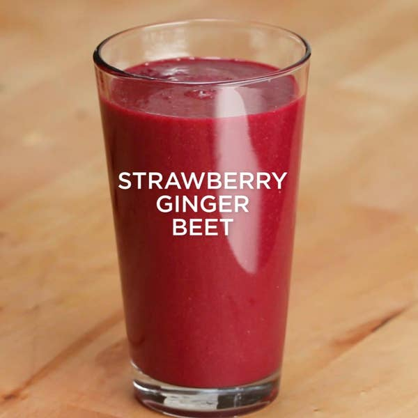

Strawberry Ginger Beet Smoothie
Prep. Time :
5 mins
Yield :
2 servings
Ingredients
1 ½ cups ice(210 g)
1 piece ginger, 1-inch (2 1/2 cm), peeled
½ red beet, peeled, diced
1 ½ cups romaine lettuce(115 g)
1 cup strawberry(150 g)
Steps
Place the strawberries, lettuce, beet, and ginger in a blender or food processor and blend until just combined.
Add in the ice and continue to blend until the mixture is smooth.
Serve immediately.